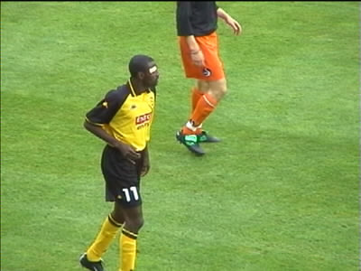

|
Roda JC - Fylkir (3-0) 11 september 20001 |
Een laffe aanslag op diverse burgerdoelen in de Verenigde
Staten overschaduwde het voetbal van vanavond.
Onze club riep terecht op tot respect naar de slachtoffers.
De nieuwbouw op west is inmiddels hoger dan het koepeldak.
Fylkir speelde in zwart/oranje, Kalac in oranje/zwart.
De minuut stilte voor de gebeurtenissen in Amerika.
Geen respect voor het verbond met de NOS vanuit zuid.
Ook op west een protest-spandoek.

Lawal met blitse pleister.
150 Fylkir-supporters!